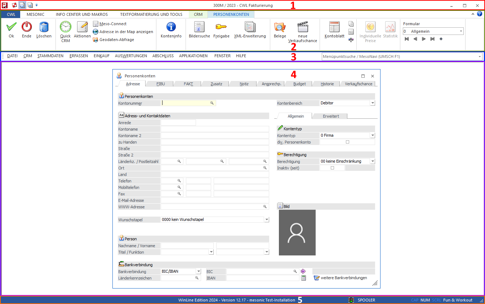

Der WinLine Bildschirm bietet eine Vielzahl von Funktion und Informationen. Hierbei ist die Darstellung in die folgenden Bereiche untergliedert:

ü 1 - Titelleiste
In der Mitte
der Titelleiste wird der aktuelle Mandant, das aktuelle Wirtschaftsjahr und die
gewählte Applikation dargestellt. Im linken Bereich der Leiste steht zusätzlich
der Bereich "Schnellzugriff" zur Verfügung. In diesen können Buttons für das
schnelle Arbeiten eingebunden werden (nähere Informationen entnehmen Sie bitte
dem Kapitel Schnellzugriff).
ü 2 - Ribbon
Im Ribbon werden
Buttons der WinLine dargestellt. Nähere Information entnehmen Sie bitte dem
Kapitel Ribbons und Buttons.
ü 3 - WinLine Menü
Mit Hilfe des
Menüs kann in der WinLine navigiert werden. Das Menü ist dabei von der aktuellen
Applikation abhängig. Neben dem Menü wird die Menüpunktsucht / MesoNavi
angeboten, welche das schnelle Auffinden von Menüpunkten ermöglicht
(applikationsübergreifend).
ü 4 - Arbeitsbereich
Innerhalb
des Arbeitsbereichs werden die Programmfenster der WinLine dargestellt. Sollte
ein Fenster nicht "in" den sichtbaren Arbeitsbereich passen, so werden
automatisch Scrollbalken gebildet.
ü 5. Statuszeile
In der
Statuszeile wird die eingesetzte Version und der Lizenzname angezeigt. Daneben
wird die Auditampel dargestellt. Springt diese auf "gelb", so stehen dem
Benutzer Informationen zur Verfügung (per Doppelklick abrufbar).
Des Weiteren
wird in der Statuszeile der aktuelle Drucker (hier "Spooler") angezeigt, auf die
Aktivierung von Sondertasten hingewiesen und der aktuelle Mandant
dargestellt.